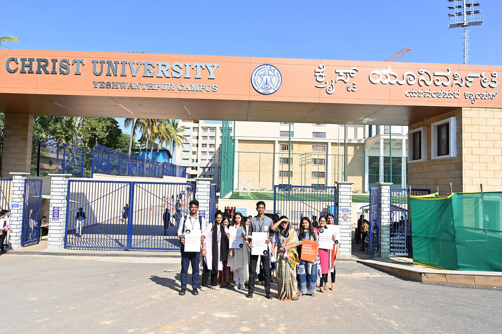

University Overview
Christ University, founded in 1969, is one of India’s top private institutions, offering programs across multiple disciplines. Located in Yeshwanthpur, Bengaluru, the university is renowned for its academic excellence, research output, and its commitment to holistic education.
The mission of Christ University is to provide quality education and empower students to develop into responsible leaders with a global mindset, rooted in ethical values.
Academic Programs
Undergraduate Programs
Christ University offers undergraduate programs in disciplines such as Arts, Commerce, Engineering, Business Administration, Law, and more, blending academic rigor with practical exposure.
Postgraduate Programs
Christ University’s postgraduate offerings include courses in management, law, science, commerce, and humanities, focusing on creating industry-ready professionals.
Research and Doctoral Programs
The university offers research programs through its various departments and institutes, encouraging innovation, interdisciplinary research, and the development of scholarly work.
Admissions Information
Undergraduate Admissions
Christ University follows a merit-based admission process for undergraduate courses. Applicants are evaluated on their academic performance, entrance exams, and interviews.
Application deadlines are generally in April-May for various programs, with entrance exams conducted for select courses.
Postgraduate Admissions
The postgraduate admission process includes entrance tests, personal interviews, and a thorough evaluation of academic qualifications.
Campus Life
Christ University offers a vibrant campus life with diverse cultural, academic, and recreational opportunities. Students are encouraged to participate in clubs, events, and various extracurricular activities.
Clubs and Societies
The university has numerous student-run clubs and societies in fields like business, arts, science, sports, and culture.
Sports and Recreation
Christ University boasts world-class sports facilities and offers a range of intramural and varsity sports, including cricket, football, basketball, and athletics.
Research and Innovation

Christ University is known for its emphasis on research and innovation across various disciplines. The university has established several research centers focusing on social issues, science, business, and technology.
The university fosters collaborations with industries and academic institutions, encouraging students and faculty to contribute to cutting-edge research and sustainable development initiatives.
Contact Us

If you have any questions or need more information about Christ University, feel free to get in touch with us:
Email: admissions@christuniversity.in
Phone: +91 (80) 4012 0000
Address: Christ University, Yeshwanthpur, Bengaluru, Karnataka, 560028, India